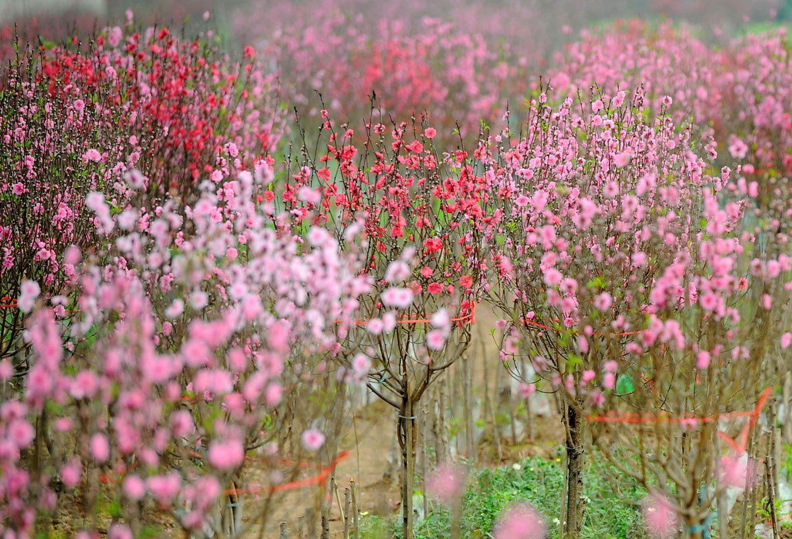
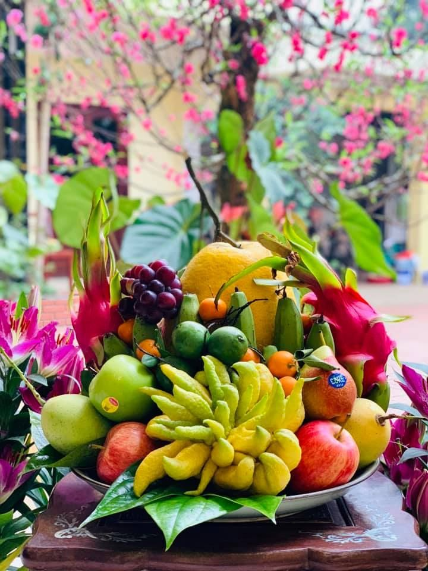
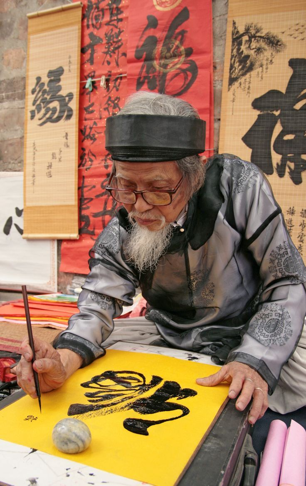

Lời Ngỏ: Ký ức Tết Bắc
Tết Nguyên Đán ở miền Bắc không chỉ là lễ hội, mà là một miền ký ức. Đó là cái lạnh ngọt ngào của mưa phùn, là sắc đào phai e ấp, và mùi khói bếp nồng đượm bên nồi bánh chưng xanh. Chúng em, những thành viên đẳng cấp của nhóm 8, muốn gửi gắm hương vị ấy qua tờ báo tường nhỏ này.
Câu Đối Ngày Xuân
câu đối đỏ
bánh chưng xanh
1. Hoa Đào - Sắc Xuân Đất Bắc
Người Bắc chuộng cành đào bích, đào phai. Một cành đào đẹp phải có đủ "tứ quý": Hoa nở, nụ e ấp, lộc biếc và quả non. Màu đỏ thắm của hoa đào mang sinh khí, xua tan cái giá lạnh mùa đông.

Vườn đào Nhật Tân khoe sắc
2. Mâm Cỗ Tết Tinh Tế
Mâm cỗ ngày Tết thể hiện sự khéo léo của người phụ nữ Tràng An. Không thể thiếu:
- Bánh Chưng: Linh hồn của Tết, vuông vức tượng trưng cho Đất.
- Thịt Đông: Món ăn độc đáo "ăn lạnh mới ngon", trong veo như thạch.
- Dưa Hành: Vị chua giòn giải ngán cho những ngày nhiều đạm.
- Canh Bóng Thả: Thanh tao, rực rỡ sắc màu như một bức tranh mùa xuân.
🎵 Góc Lắng Đọng & Chia Sẻ 🎵
Khoảnh khắc giao thừa:
Có những mùa xuân ta bận rộn giữa dòng đời hối hả, chợt giật mình khi nghe tiếng pháo giao thừa vang lên. Phút giây ấy, dù có ở nơi đâu, chỉ mong được trở về nhà, được quay quần bên bếp lửa mờ sương... "Rồi ta sẽ ngắm pháo hoa cùng nhau", như một lời hẹn ước bình yên nhất gửi tới những người ta thương yêu.
Thước phim: Khép lại bộn bề, đón một năm mới bình an
🌸 Phong Tục 3 Ngày Tết
Dân gian ta từ ngàn đời nay vẫn truyền miệng câu ca: "Mùng Một tết cha, mùng Hai tết mẹ, mùng Ba tết thầy". Đó không chỉ là lịch trình du xuân, mà còn là đạo lý sâu xa, là cái nếp văn hóa ăn sâu vào máu thịt người Việt.
- Mùng 1 - Hướng về cội nguồn: Ngày đầu tiên của năm mới dành trọn cho gia đình nội tộc. Là lúc thắp nén nhang thơm lên bàn thờ gia tiên, chúc thọ ông bà, và tận hưởng cái Tết đoàn viên đầm ấm nhất.
- Mùng 2 - Nghĩa nặng tình sâu: Con cháu quay trở về nhà ngoại, tri ân công ơn sinh thành dưỡng dục của nhạc phụ nhạc mẫu. Là sự gắn kết không thể tách rời của hai tiếng "Gia đình".
- Mùng 3 - Tôn sư trọng đạo: Ngày mùng 3, gác lại chuyện gia đình, học trò xưa nay tìm về thăm thầy cô giáo cũ. Một chữ cũng là thầy, nửa chữ cũng là thầy, ấy là truyền thống hiếu học ngàn đời.
🌼 Thông Điệp Xuân Bính Ngọ
"Thời gian như bóng câu qua cửa sổ. Năm cũ khép lại mang theo những bộn bề, lo toan. Xuân Bính Ngọ gõ cửa, nhóm 8 lớp 12A2 chúng em xin gửi ngàn lời chúc bình an đến tất thảy mọi người. Mong cho mưa thuận gió hòa, mong cho mọi gia đình được sum vầy bên mâm cơm ấm áp. Bởi suy cho cùng, hạnh phúc không nằm ở đâu xa xôi, mà nằm ngay trong khoảnh khắc ta biết trân trọng những người đang hiện hữu bên cạnh mình..."
Phóng sự: Mùi vị bánh chưng

Mâm ngũ quả sum vầy

Cụ đồ cho chữ lấy may
Khoảnh khắc Giao thừa